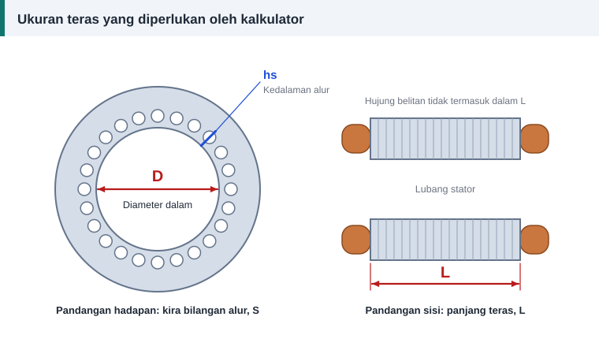

Panduan bengkel
Cara Mengukur Teras Stator dan Mengisi Kalkulator
Sebatang angkup vernier, pembaris keluli dan sebatang pen penanda sudah cukup. Yang lebih penting ialah mengukur tempat yang betul, kerana kalkulator tidak dapat membetulkan angka yang salah.


Bilangan alur, S
- Tandakan satu alur dengan pen penanda.
- Kira mengikut arah jam sehingga kembali ke tanda itu.
- Kira sekali lagi mengikut arah lawan jam.
Bagi belitan tiga fasa, jawapannya mestilah gandaan 3. Nombor yang lazim ialah 12, 18, 24, 36 dan 48. Jika kiraan anda 23 atau 35, kira semula.
Diameter dalam, D
Gunakan rahang dalam angkup vernier pada lubang stator. Ukur besi teras, bukan baji atau sisa varnis.
- Ukur pada dua arah yang bersilang, kemudian ambil purata.
- Letakkan rahang pada gigi teras, bukan pada bukaan alur.
- Jangan gunakan diameter luar rangka. Itu ukuran lain sama sekali.
Panjang teras, L
Ukur tindanan laminasi sahaja, dari laminasi pertama hingga laminasi terakhir. Hujung belitan yang menjulur keluar tidak dikira, seperti yang ditunjukkan dalam rajah.
Motor besar kadangkala mempunyai saluran pengudaraan di celah tindanan. Tolak lebar saluran itu daripada panjang yang diukur.
Kedalaman alur
Selepas belitan lama dikeluarkan, masukkan batang pengukur kedalaman angkup dari permukaan lubang stator hingga ke dasar alur. Jika medan ini dibiarkan kosong, kalkulator menganggarkannya sebagai 0.16 × D. Anggaran itu hanya mempengaruhi panjang dawai, berat kuprum dan rintangan, bukan bilangan lilitan.
Luas alur
Luas alur menentukan dawai paling besar yang muat. Tekap bentuk alur pada kertas, bahagikan kepada trapezium dan separuh bulatan, kemudian jumlahkan luasnya. Kaedah dan contoh kiraan ada dalam faktor isian alur.
Tanpa luas alur, kalkulator memilih dawai mengikut ketumpatan arus sahaja dan tidak dapat memberi amaran jika gegelung tidak muat.
Bilangan kutub
Baca laju pada plat nama dan bundarkan hasil formula ini kepada nombor genap yang terdekat:
P ≈ 120 × f ÷ laju plat nama
Contoh: 1420 psm pada 50 Hz memberi 120 × 50 ÷ 1420 = 4.2, jadi motor itu 4 kutub. Jika plat nama hilang, rentang gegelung lama memberi petunjuk, kerana rentang biasanya hampir sama dengan bilangan alur dibahagi bilangan kutub.
Mengisi kalkulator
- Buka tab "Belitan 3 fasa" pada kalkulator.
- Masukkan voltan talian, frekuensi dan sambungan seperti pada plat nama.
- Masukkan arus plat nama. Jika tiada, pilih kuasa dan isi kecekapan serta faktor kuasa.
- Isi bilangan alur, bilangan kutub, D dan L.
- Isi kedalaman alur dan luas alur jika sudah diukur.
- Pilih satu lapis atau dua lapis mengikut belitan asal.
- Biarkan rentang gegelung kosong untuk nilai automatik, atau masukkan rentang asal.
- Kekalkan ketumpatan fluks 0.55 T sebagai permulaan jika tiada maklumat lain.
- Jika bilangan lilitan asal diketahui, isikannya untuk melihat ketumpatan fluks yang digunakan oleh pengilang.
Menyemak keputusan
- Ketumpatan fluks purata biasanya antara 0.30 dan 0.65 T. Di luar julat itu, kalkulator memaparkan amaran.
- Faktor isian melebihi 0.45 bermaksud gegelung sukar dimasukkan dengan tangan.
- Ketumpatan arus melebihi 8 A/mm² menandakan belitan berisiko panas.
- Bandingkan dengan belitan asal jika ada. Data asal sentiasa lebih dipercayai daripada anggaran.
Kesilapan ukuran yang lazim
- Memasukkan inci sebagai milimeter. Kalkulator menggunakan milimeter.
- Memasukkan diameter luar stator sebagai D.
- Memasukkan hujung belitan atau penutup hujung dalam L.
- Tersalah kira alur sebanyak satu.
- Mengukur diameter pada sisa varnis yang tebal.
Berapa besar kesan ralat ukuran?
Bilangan lilitan berkadar songsang dengan D dan dengan L. Dalam contoh motor 1.1 kW, ralat 1 mm pada diameter 80 mm mengubah keputusan kira-kira 1.3%, iaitu daripada 104 kepada 103 lilitan setiap gegelung. Ralat 5 mm pula mengubahnya sebanyak enam atau tujuh lilitan, dan itu sudah cukup untuk menjejaskan motor.
Kiraan penuh bagi motor contoh itu ada dalam contoh pengiraan motor 1.1 kW.
Rujukan dan bacaan lanjut
Artikel berkaitan
Contoh Pengiraan Penuh: Motor 1.1 kW, 4 Kutub, 24 Alur
Ikuti pengiraan lengkap belitan motor 1.1 kW daripada ukuran teras hingga bilangan lilitan, saiz dawai, faktor isian dan berat kuprum, sama seperti keputusan kalkulator.
Cara Merekod Data Belitan Sebelum Membuka Motor
Lima minit mencatat data sebelum memotong belitan lama menjimatkan berjam-jam meneka kemudian. Gunakan senarai semak ini untuk plat nama, teras, gegelung, dawai dan sambungan.
Faktor Isian Alur: Berapa Banyak Dawai Boleh Masuk
Pengiraan memberi bilangan lilitan dan saiz dawai, tetapi alur yang menentukan sama ada semuanya muat. Faktor isian ialah semakan terakhir sebelum mula melilit gegelung.